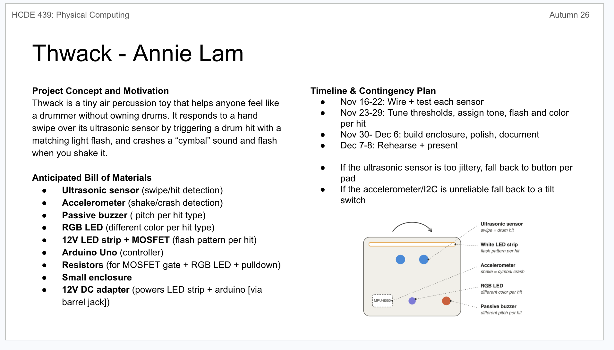

HCDE 439 Physical Computing · Autumn 2026 · Annie Lam

Most of my assignments so far have been about light and timing (twinkling LEDs, a beat-synced light show, an LED strip dimmer). Thwack turns that into something you can play: your own gestures trigger the sound and light, instead of a fixed sequence in the code.
| Type | Part | What it does |
|---|---|---|
| Sensor | Ultrasonic sensor (HC-SR04) | Measures how close your hand is. A quick swipe within range triggers a drum hit. |
| Sensor | Accelerometer (GY-521 / MPU-6050, over I2C) | Detects a shake, which triggers a cymbal crash. |
| Actuator | Passive buzzer | Plays a different pitch for each kind of hit. |
| Actuator | 12V white LED strip, switched by an N-MOSFET | Flashes a different pattern for each hit: a quick pop for a drum hit, a strobe burst for the crash. |
| Actuator | RGB LED | Shows a different color for each kind of hit. |
| Dates | Milestone |
|---|---|
| Nov 16–22 | Wire and test each sensor on its own |
| Nov 23–29 | Tune the swipe and shake thresholds; assign a tone, flash and color to each hit |
| Nov 30–Dec 6 | Build the enclosure, polish, and write documentation |
| Dec 7–8 | Rehearse and present |
| Dec 10 | Live demo |